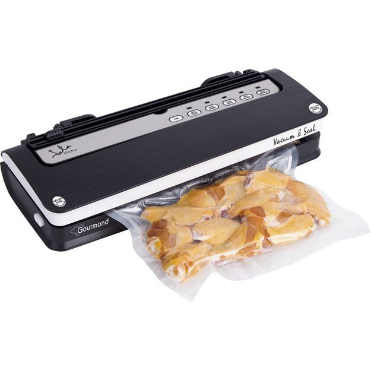

Vakumatoriai ir jų priedai | Vakumatorius.lt
2020.10.29 13:03
Apie mus Pristatymas į namus Taisyklės ir sąlygos Garantija Kontaktai Prisijungti Skambinkite +37066999910 Rašykite info@vakumatorius.lt 0 Krepšelis tuščias Pirkinių krepšelis viso 0 prekės Šiuo metu nėra pridėtų prekių Viso už prekes 0,00 € Tęsti apsipirkimą Apmokėti Menu Maisto vakuumatoriai Maisto vakumatoriai
Maisto vakumatoriai - Status, Fagor, Princess, Stollar. Naujausi ir populiariausi vakumatoriai.
Status vakuumatoriai
Princess vakuumatoriai
Stollar vakuumatoriai
Fagor vakuumatoriai
Maišeliai Rulonėliai Priedai Maisto vakumatorių priedaiĮvairūs maisto vakumatorių priedai, kaip maži/dideli vakumavimo indeliai, pompos, vakumavimo maišeliai ir kiti priedai.
Maži vakuumavimo indeliai
Dideli vakuumavimo indeliai
Rankinės vakuumavimo pompos
Vakuumavimo dangtelių komplektai
Vakuumo grafinai
Cirkuliatoriai Peilių galąstuvai HORECA Pagrindinis + Maisto vakuumatoriai Status vakuumatoriai Stollar vakuumatoriai Fagor vakuumatoriai Princess vakuumatoriai Profesionalūs vakuumatoriai Reber vakuumatoriai Artus vakuumatoriai Vakuumavimo Maišeliai Vakuumavimo rulonėliai + Priedai Maži vakuumavimo indeliai Dideli vakuumavimo indeliai Rankinės vakuumavimo pompos Vakuumavimo dangtelių komplektai Populiariausi Specialūs šventiniai pasiūlymai Geriausiai parduodamos AKCIJA Status vakuumatoriaiSTATUS HV500 VAKUUMATORIUS
Pagaminta: Slovėnija. Pristatymas: 1-2 darbo dienos. Našumas: 14 l..
Status HV500 tai populiariausias maisto vakuumatorius skirtas... Pridėti į krepšelį Sandelyje: Yra Atsiliepimų nėra 120,00 € 95,00 € Vakuumavimo MaišeliaiSTATUS VAKUUMO MAIŠELIAI 28X36 CM, 25VNT
Pagaminta: Slovėnija. Plotis: 28cm. Ilgis: 36cm.
Tinkama ir kitų gamintojų vakuumavimo aparatams (Stollar,... Pridėti į krepšelį Sandelyje: Yra Atsiliepimų nėra 9,00 € Vakuumavimo rulonėliaiSTATUS VAKUUMO RULONĖLIAI 20X300CM, 4VNT
Pagaminta: Slovėnija. Plotis: 20cm. Ilgis: 300cm.
Tinkama ir kitų gamintojų vakuumavimo aparatams (Stollar,... Pridėti į krepšelį Sandelyje: Yra Atsiliepimų nėra 9,00 € Vakuumavimo rulonėliaiSTATUS VAKUUMO RULONĖLIAI 28X300CM, 3VNT
Pagaminta: Slovėnija. Plotis: 28cm. Ilgis: 300cm.
Tinkama Status ir kitų gamintojų vakuumavimo aparatams... Pridėti į krepšelį Sandelyje: Yra 1 ats.... 1 Atsiliepimas(-ai) 9,00 € Vakuumavimo rulonėliaiSTATUS VAKUUMO RULONĖLIAI 12X300CM, 5VNT
Pagaminta: Slovėnija. Plotis: 12cm. Ilgis: 300cm.
Tinkama ir kitų gamintojų vakuumavimo aparatams (Stollar,... Pridėti į krepšelį Sandelyje: Yra Atsiliepimų nėra 9,00 € Indelių komplektaiSTATUS VAKUUMO INDELIŲ KOMPLEKTAS (2VNT) BALTA
Gamintojas: status.
2-ų didesnių indelių ir rankinės oro ištraukimo pompos... Nėra sandėlyje Sandelyje: Nėra Atsiliepimų nėra 35,00 € Indelių komplektaiSTATUS APVALŪS VAKUUMO INDELIAI (2VNT) ŽALI
Gamintojas: status.
Status 2-ų apvalių indelių ir rankinės oro ištraukimo pompos... Nėra sandėlyje Sandelyje: Nėra Atsiliepimų nėra 19,00 € AKCIJA Status vakuumatoriaiSTATUS SV2000 maisto vakuumatorius (žvejams, ūkininkams,...
Pagaminta: Slovėnija. Pristatymas: 1-2 darbo dienos. Našumas: 22 l..
Naujausias Status SV2000 profesionalus ir ypač galingas... Pridėti į krepšelį Sandelyje: Yra 2 ats.... 2 Atsiliepimas(-ai) 165,00 € 127,00 € AKCIJA Profesionalūs vakuumatoriaiSTATUS PROVAC 360 profesionalus vakuumatorius
NET 5 metų garantija! Status Provac 360 yra... Pridėti į krepšelį Sandelyje: Yra Atsiliepimų nėra 555,00 € 455,00 € AKCIJA Reber vakuumatoriai
Reber vakuumatorius 9716 NEL ECOPRO 40 - INOX
9716 NEL EcoPro 40 Profesionalus metalinis vakuumavimo... Pridėti į krepšelį Sandelyje: Yra Atsiliepimų nėra 599,00 € 429,00 € AKCIJA Reber vakuumatoriai
Reber vakuumatorius 9709 NEL PROFESSIONAL 30 - INOX
Reber 9709 NEL yra galingas ir labai "ūkiškai" padarytas... Pridėti į krepšelį Sandelyje: Yra Atsiliepimų nėra 499,00 € 399,00 € AKCIJA Stollar vakuumatoriai
VAKUUMATORIUS STOLLAR BVS700
Pagaminta: Kinija. Pristatymas: 1-2 darbo dienos. Našumas: 15 l min.
Galingiausias iš Stollar vakuumavimo aparatų Stollar BVS700.... Pridėti į krepšelį Sandelyje: Yra Atsiliepimų nėra 170,00 € 159,00 € AKCIJA Reber vakuumatoriaiReber vakuumatorius 9700 NF FAMILY
Populiariausias REBER 9700 pusiau profesionalus automatinis... Pridėti į krepšelį Sandelyje: Yra Atsiliepimų nėra 179,00 € 129,00 € AKCIJA Status vakuumatoriai
STATUS SV2000 maisto vakuumatorius (žvejams, ūkininkams,...
Pagaminta: Slovėnija. Pristatymas: 1-2 darbo dienos. Našumas: 22 l..
Naujausias Status SV2000 profesionalus ir ypač galingas... Pridėti į krepšelį Sandelyje: Yra 2 ats.... 2 Atsiliepimas(-ai) 165,00 € 127,00 € AKCIJA Reber vakuumatoriaiReber vakuumatorius 9340 N SALVASPESA
Itališkas Reber 9340N vakuumavimo aparatas skirtas namams.... Pridėti į krepšelį Sandelyje: Yra Atsiliepimų nėra 159,00 € 109,00 € AKCIJA Status vakuumatoriai
STATUS HV500 VAKUUMATORIUS
Pagaminta: Slovėnija. Pristatymas: 1-2 darbo dienos. Našumas: 14 l..
Status HV500 tai populiariausias maisto vakuumatorius skirtas... Pridėti į krepšelį Sandelyje: Yra Atsiliepimų nėra 120,00 € 95,00 € Vakuumavimo rulonėliaiSTATUS VAKUUMO RULONĖLIAI 28X300CM, 3VNT
Pagaminta: Slovėnija. Plotis: 28cm. Ilgis: 300cm.
Tinkama Status ir kitų gamintojų vakuumavimo aparatams... Pridėti į krepšelį Sandelyje: Yra 1 ats.... 1 Atsiliepimas(-ai) 9,00 € AKCIJA Status vakuumatoriaiSTATUS SV2000 maisto vakuumatorius (žvejams, ūkininkams,...
Pagaminta: Slovėnija. Pristatymas: 1-2 darbo dienos. Našumas: 22 l..
Naujausias Status SV2000 profesionalus ir ypač galingas... Pridėti į krepšelį Sandelyje: Yra 2 ats.... 2 Atsiliepimas(-ai) 165,00 € 127,00 € Vakuumavimo rulonėliaiSTATUS VAKUUMO RULONĖLIAI 20X300CM, 4VNT
Pagaminta: Slovėnija. Plotis: 20cm. Ilgis: 300cm.
Tinkama ir kitų gamintojų vakuumavimo aparatams (Stollar,... Pridėti į krepšelį Sandelyje: Yra Atsiliepimų nėra 9,00 € Vakuumavimo MaišeliaiSTATUS VAKUUMO MAIŠELIAI 20X28 CM, 40VNT
Pagaminta: Slovėnija. Plotis: 20cm. Ilgis: 28cm.
Tinkama ir kitų gamintojų vakuumavimo aparatams (Stollar,... Pridėti į krepšelį Sandelyje: Yra 1 ats.... 1 Atsiliepimas(-ai) 9,00 € Vakuumavimo MaišeliaiSTATUS VAKUUMO MAIŠELIAI 28X36 CM, 25VNT
Pagaminta: Slovėnija. Plotis: 28cm. Ilgis: 36cm.
Tinkama ir kitų gamintojų vakuumavimo aparatams (Stollar,... Pridėti į krepšelį Sandelyje: Yra Atsiliepimų nėra 9,00 € Vakuumavimo rulonėliaiSTATUS VAKUUMO RULONĖLIAI 12X300CM, 5VNT
Pagaminta: Slovėnija. Plotis: 12cm. Ilgis: 300cm.
Tinkama ir kitų gamintojų vakuumavimo aparatams (Stollar,... Pridėti į krepšelį Sandelyje: Yra Atsiliepimų nėra 9,00 € Vakuumavimo MaišeliaiSTATUS VAKUUMO MAIŠELIAI 12X55 CM, 30VNT
Pagaminta: Slovėnija. Plotis: 12cm. Ilgis: 55cm.
Tinkama ir kitų gamintojų vakuumavimo aparatams (Stollar,... Pridėti į krepšelį Sandelyje: Yra 1 ats.... 1 Atsiliepimas(-ai) 9,00 € AKCIJA Status vakuumatoriaiSTATUS HV500 VAKUUMATORIUS
Pagaminta: Slovėnija. Pristatymas: 1-2 darbo dienos. Našumas: 14 l..
Status HV500 tai populiariausias maisto vakuumatorius skirtas... Pridėti į krepšelį Sandelyje: Yra Atsiliepimų nėra 120,00 € 95,00 € Mūsų parduotuvėse taip pat galite įsigytiVakumatoriai
Vakumatorius.lt - oficialūs populiariųjų slovėniškų Status ir Princess vakuumatorių namams partnerių atstovai Lietuvoje. Drauge su kolegomis ir klientais dirbame tiesiogiai, todėl visada galime užtikrinti operatyvumą, prekių kokybę ir garantijas. Patys esame išbandę ir naudojame vakuumatorius namuose, todėl visada su malonumu patarsime ir padėsime išsirinkti jums geriausią maisto vakuumatorių asmeniškai jums. Suvakumuotas maistas 6 kartus ilgiau liks šviežias ir skanus. Vakuumavimas ypač tinka mėsai, daržovėms, grybams, kad po kurio laiko šaldytuve ar kelionėje maistas vis dar būtų toks pat kvapnus, skanus ir išsaugojęs gerąsias medžiagas!
Greitas pristatymas 1-2 darbo dienos su VENIPAK kurjeriu Operatyvi pagalba telefonu 7 dienas per savaitę; 8.00 — 21.00 val. Įvairūs atsiskaitymo būdai Banko pavedimu arba grynaisiais pristatymo metuVakuumavimo aparatai maistui
Galime pasiūlyti vieną plačiausių namams skirtų vakuumatorių ir priedų jiems pasirinkimą pasirinkimą Baltijos šalyse. Jei vakumatorių ar jų priedus užsakysite iki 15h – juos pristatysime artimiausią darbo dieną visoje Lietuvoje. Jau daugiau nei trejus metus prekiaujame, o kartu ir savo namuose naudojame Status vakuumatorius + esame sukaupę gausybę jūsų atsiliepimų. Todėl tikrai pasistengsime išsamiai atsakyti į visus jums kylančius klausimus. Už užsakymus galima nemokamai atsiskaityti grynaisiais, kurjerio pristatymo metu, taip pat bankiniu pavedimu, ar lizingu. Profesionalūs konsultantai įsiklausys į jūsų norus ir kartu padės išsirinkti geriausiai jūsų poreikius atitinkantį vakuumatorių. Garantuojame geriausias Status vakuumatorių kainas Lietuvoje – jei rasite pigiau būtinai informuokite mus ir pateiksime jums specialų pasiūlymą. Visoms prekėms taikoma 2 metų garantija su galimybe ją dar pratęsti 5 metams. Puikūs klientų atsiliepimai ir padėka yra mūsų prioritetas, todėl kas dieną ir su kiekvienu žmogumi stengiamės rasti bendrą kalbą, kad antra kartą jam sugrįžus bendrauti toliau būtų paprasta ir malonu. Mėgstame savo darbą, todėl stengiamės jį padaryti kuo geriau ir kad jūs tai įvertintumėte. Ačiū, kad užsukote į Vakumatorius.lt parduotuvę. Jei tik turėsite klausimų visada prašome kreiptis į pagalbą gyvai, skambinti į parduotuvę telefonu ar susisiekti elektroniniu paštu ir kiek įmanoma greičiau pasistengsime padėti rasti geriausią sprendimą asmeniškai jums ir jūsų kokybę mylintiems namams. Vakumatorius.lt partneriai Naujienlaiškio prenumerata Sužinokite aktualiausias naujienas pirmas! Kategorijos Maisto vakuumatoriai Vakuumavimo Maišeliai Vakuumavimo rulonėliai Priedai Cirkuliatoriai Peilių galąstuvai GASTRO Informacija Vakumatorių pristatymas į namus | Vakumatorius.lt Taisyklės ir sąlygos | Vakumatorius.lt Informacija apie Vakumatorius.lt - dabar vakuumatoriai internetu Vakumatorių garantija ir grąžinimas | Vakumatorius.lt Vakumatoriai Lizingu geriausiomis kainomis|vakumatorius.lt Kontaktai | Vakumatorus.lt vakumatorių parduotuvė internete Pratęsta garantija vakumatoriams Vakumatoriaus blogas Vakumatoriai su Tax Free ir Global Blue Lietuvoje. PVM grąžinimas Svetainės žemėlapis Mano paskyra Prisijungti Registruotis Bendraukime Skambinkite +37066999910 Rašykite info@vakumatorius.lt Socialiniai tinklai x Jau daugiau nei 10 000 užsakymų pristatėme greičiau nei per 1 dieną! 2015 2020 © MB Borvus . Visos teisės saugomos. Prisijungimas Pasiteiraukite dėl prekės El.pašto adresas Vardas Kontaktinis tel. Jūsų žinutė - klausimaiIšsiųsti Paieška
Įveskite ieškomos prekės raktažodį / pavadinimą ar prekės kodą. Spauskite ieškoti.
Kiekis: vnt.
Viso:
Jūsų krepšelyje laukiančios prekės.
Viso prekės:
